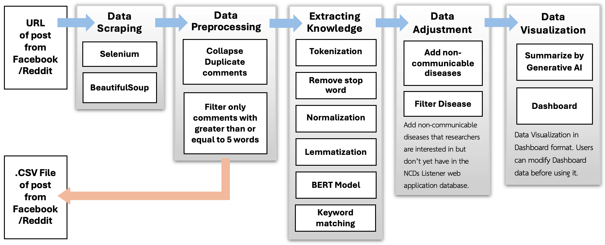

NCDs Listener: Social Listening Web Application for Non-Communicable Disease (NCDs) Patients
เว็บแอปพลิเคชันการฟังเสียงบนสื่อสังคมออนไลน์สําหรับผู้ป่วยกลุ่มโรคไม่ติดต่อเรื้อรัง

Main Content


Abstract
Over 41 million people worldwide die from NCDs (non-communicable diseases) annually, the majority of which occur in low- and middle-income countries.
Social media has become a critical platform for individuals to share experiences and access information about NCDs. Social (media) listening offers valuable insights by analyzing user discussions,
but existing tools are closed-source and commercial. This study seeks to simplify the extraction of NCD-related knowledge from social media, making it easier for the public to understand and access information.
It also explores how the NCD community shares its lived experiences online. We proposed an open-source social (media) listening tool called NCDs Listener to collect, analyze, summarize, and visualize data.
Comments about NCDs can be collected from public posts. This time, we studied the characteristics of comments from Facebook and Reddit posts that mentioned NCDs to demonstrate the NCDs Listener tool.
Use keyword matching and the BERT Model to extract knowledge from comments. The preliminary data was analyzed using descriptive statistics. Additionally, a Generative AI model summarizes the extracted knowledge in human-readable sentences.
Our NCDs Listener tool is open-source and can extract knowledge related to NCDs. This knowledge can be used as a guideline for treatment or the development of effective care to meet patients’ needs.
Our findings demonstrate that aggregated social media data not only provides immediate insights but also serves as a springboard for advanced statistical analyses and cutting-edge data science approaches, opening new avenues for understanding complex social phenomena and predicting emerging trends.
Workflow

Systems Design
The NCDs Listener system was developed using Python 3.11.9 to collect, analyze, and summarize social media posts related to NCDs. It helps turn these posts into meaningful insights. The system implements a five-step workflow:- Data Scraping step: When a user enters a social media post URL into the NCDs Listener tool, the system leverages web scraping tools like Selenium and Beautiful Soup to extract relevant data from the post.
- Data Preprocessing step: The system cleanses the collected data by removing duplicate comments and filtering out extremely short text entries. Preprocessed data can be exported in CSV format for future analysis.
- Knowledge Extraction step: The system employs natural language processing (NLP) techniques, including tokenization, stop word removal, normalization, lemmatization, keyword matching, and application of the Bidirectional Encoder Representations from Transformers (BERT) model (14) to identify the type of comments.
- Data Adjustment step: Users can add diseases and symptoms they wish to include or exclude those they do not want. The system then filters the comments based on the specified diseases and symptoms, tailoring the data to the user's requirements.
- Data Visualization step: The enhanced data is summarized and displayed on an interactive dashboard, featuring a comprehensive summary generated by a Generative AI model. Users can also explore the data from a summary statistics table about the post or export the results to a PDF.
How do you use our tool to scrape data from social media?
Webpage

Data Selection page.

Data Preparation page.

Data Visualization page.
Story Board
.png)
Activities Participated
Below are the activities involving the NCDs Listener research team, a web application for social media listening for patients with non-communicable diseases. There are 4 activities as follows:
- The 26th National Software Contest (NSC 2024) Accept
- Invitation to the International Conference on Applied Statistics (ICAS 2024 ) Reject
- Thailand New Gen Inventors Award 2025 (I-New Gen Award 2025) Reject
- International Symposium for Agricultural Biomedical Research Network (ISABRN 2025) Accept
Received a scholarship to develop and enter the final round of the "26th National Software Contest: NSC 2024" from July 19 to August 18, 2024.
Video Presentation
Brochure
Photo
Invitation to the International Conference on Applied Statistics (ICAS 2024)
Proceeding for Submit
Thailand New Gen Inventors Award 2025 (I-New Gen Award 2025)
Poster for Submit

Participate in presenting a conference at the "International Symposium for Agricultural Biomedical Research Network" (ISABRN2025)
Topic: The Fusion of Natural Product Chemistry and Medical Information Engineering for Advancement of Medicine – 2025
on 9–10 January 2025 at UNISERV Chiang Mai University Chiang Mai, Thailand
You can visit this conference website Click me.
Abstract
Proceeding E-Book (on page 124).
Click here to download!Photo


The website template was borrowed from Michaël Gharbi.